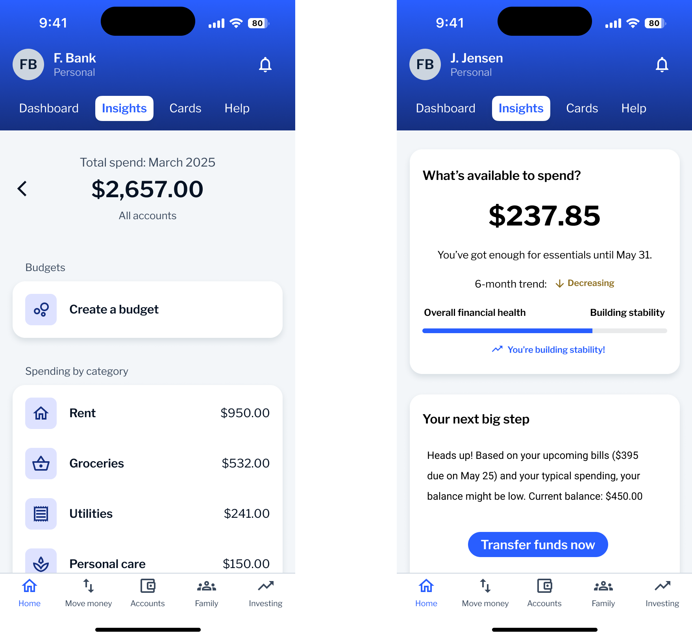
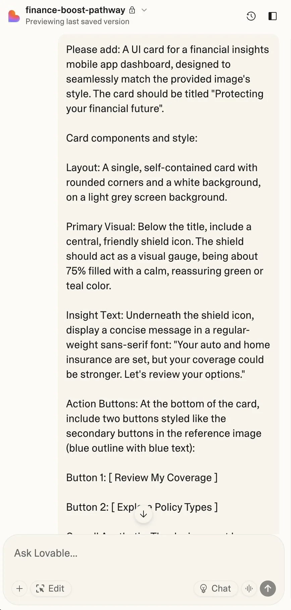

AI-Powered Financial Wellness
'First Bank' | Amsterdam
Goal
Design a scalable AI-powered financial wellness experience that transforms complex behavioral data into actionable, everyday insights, measured by a 20% increase in engagement with personalized insights.
Before and after

Where we started
During the Retail Banking Revamp, most of our focus was on improving the app's dashboard and overall information architecture. We streamlined navigation and reduced friction across core user flows.
At the time, the Financial Insights page was largely out of scope. It existed as a generic screen with limited insights or personalization — and user engagement was low. We saw an opportunity to revisit this underutilized area and reimagine how insights could feel more actionable, emotionally supportive, and easy to act on.
Our first steps
- Revisited existing analytics to understand how users were interacting with the Financial Insights page.
- Reviewed prior research from the Retail Banking Revamp, focusing on navigation, dashboard usage, and content hierarchy.
- Began experimenting with our internal AI toolkit: Notebook LM, Gemini Deep Research, Lovable AI, and Figma Make.

Prior research review: financial insights research report
Discovery
Here's what I did:
Survey review: I revisited a previously run financial wellness survey with 397 participants across the US, UK, and Canada to identify what people expect from financial dashboards. Key findings shaped early decisions around clarity, forecasting, and actionable guidance.
Segment & persona alignment: I used Gemini Deep Research to surface behavioral segments and mapped these against existing personas to clarify needs, goals, and pain points across different user types.
Prompt design & ideation: I created a structured prompt combining survey themes, behavioral segments, and tone considerations, and input it into Lovable AI to generate actionable nudges.
Rapid concept iteration: I translated the AI nudges into a first concept prototype, integrating forecasting, debt tracking, and contextual guidance. Internal feedback helped refine this direction.

Lovable AI concept iteration
Concept exploration: layout variations
I explored multiple ways to organize and prioritize financial insights. Each layout tested different strategies for reducing overwhelm and guiding user focus.

Impact
- Research results show participants are overwhelmingly positive about the redesign
- The concept is influencing broader client conversations about Financial Wellness overhaul
- Demonstrated how to integrate AI throughout the design process in ways that enhance rather than disrupt user experiences